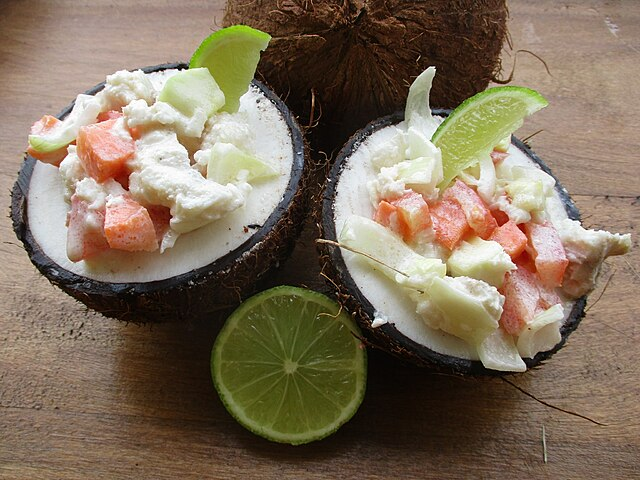
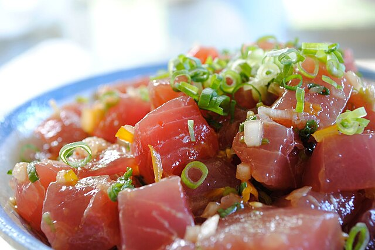

Rarotonga
A beautiful, small island, great for a relaxing retreat and tropical adventures.
Places worth visiting:
- Swimming with turtles - A fun experience snorkelling with turtles, great if you love marine life and swimming.

Turtle - Brocken Inaglory - Wikimedia Commons - CC BY SA
- Muri Lagoon - One of the best snorkelling beaches on the island, you can see lots of colourful fish and coral.

Muri Lagoon - Gemma Longman - Wikimedia Commons - CC BY
Popular Food and Drinks:
- Ika Mata - A classic from the Cook Islands, Ika Mata is a salad consisting of raw fish, coconut cream, and vegetables.

Ika Mata - Arnaud 25 - Wikimedia Commons - CC BY SA
- Poke - while many associate this dish with Japan, Poke is also a Cook Islands dish, consisting of rice and raw fish, and salad.

Poke - Openmalware.exe - Wikimedia Commons - CC BY SA
If you want to learn about another country, click one of these links!
Singapore
England
California
Germany
Home